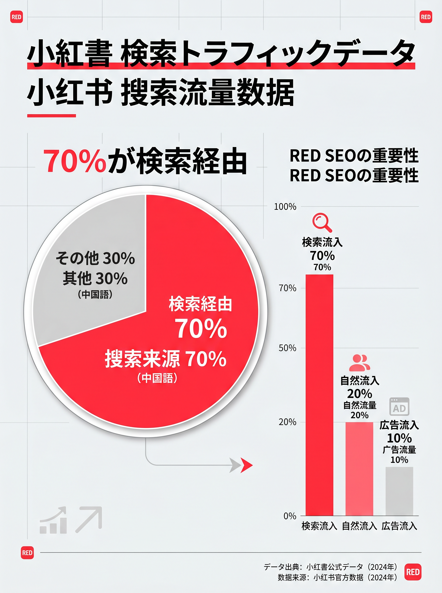
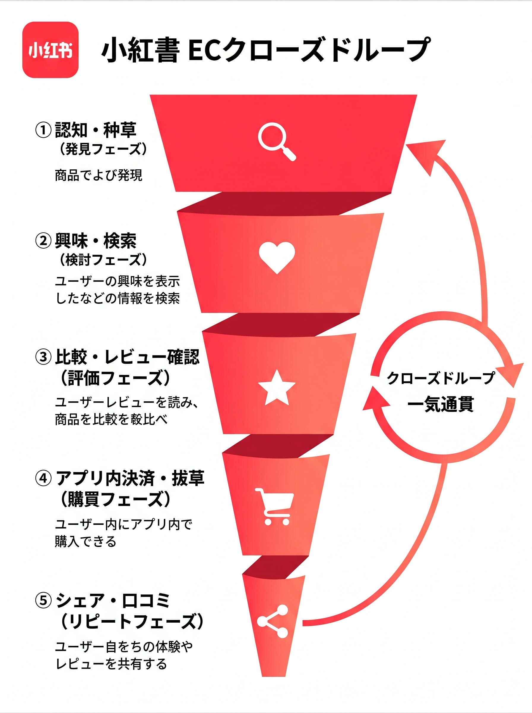

中国ビジネスやインバウンド集客に取り組んでいる皆さん、最近「小紅書（RED）の動きがなんだか変わったな？」と感じていませんか？
実は2026年に入り、月間3.5億人が利用する中国最大の口コミSNS「小紅書（Xiaohongshu / RED）」には、プラットフォーム全体を揺るがす大きな変化が起きています。
結論から言うと、今の小紅書はただのSNSではなく「検索エンジン化」し、さらに「越境EC」の機能を爆発的に強化しています。「とりあえず可愛い写真を載せてバズるのを待つ」という昔のやり方は、もう通用しなくなりつつあるんです。
今回は、中国マーケティングを熟知するPROTECHが、2026年の小紅書におけるアルゴリズムの最新動向と、日本企業が取るべき具体的な打ち手を分かりやすく解説します。
1. 小紅書（RED）の今：検索エンジン化するプラットフォーム
かつての小紅書は、タイムライン（フィード）に流れてくる投稿をダラダラと眺める使い方が主流でした。しかし2026年現在、ユーザー行動の大部分は「能動的な検索」にシフトしています。
データによると、小紅書内のトラフィック（アクセス数）の約70%が「検索経由」になっています。つまり、ユーザーはGoogleやYahoo!を使う感覚で、「日本 おすすめ コスメ」「東京 美味しい 焼肉」といったキーワードを小紅書で検索しているんです。

※画像イメージ：小紅書における検索流入とフィード流入の割合推移データ
この変化によって、マーケティング業界では「RED SEO（小紅書検索エンジン最適化）」という言葉が飛び交うようになりました。バズ（偶然の大流行）を狙うのではなく、ユーザーが検索するキーワードを逆算して、タイトルやタグ、本文に自然に組み込む戦略が必須になっています。
2. アルゴリズムの変更：「CESスコア」の真実
では、具体的にアルゴリズムはどう変わったのでしょうか？
小紅書が投稿の良し悪しを判断する基準に「CES（Content Engagement Score）」というものがあります。昔は「いいね！」の数が一番偉かったのですが、2026年のアルゴリズムでは「保存率」と「完読率」が圧倒的に重視されています。
💡 2026年アルゴリズムの最重要ポイント
- 保存率（コレクション）：「あとで見返したい実用的な情報か？」
- 完読率：「途中で離脱せず、最後まで読まれたか？（動画なら2分以上見られたか？）」
どんなに写真が綺麗でも、中身が薄ければ拡散されません。逆に、「使用前・使用後の比較画像（ビフォーアフター）」や「朝の時短メイク手順」といった実用的で保存したくなるコンテンツは、AIによって高く評価され、長期間にわたって検索上位に表示されやすくなります。
また、インフルエンサーを活用する際も、ただフォロワー数が多いだけのKOL（キーオピニオンリーダー）より、身近でリアルな口コミを発信するKOC（キーオピニオンコンシューマー）を複数起用し、保存率の高い良質な投稿を生み出す2段階戦略が主流です。
3. 越境EC機能の強化：アプリ内で全て完結
2026年のもう一つの大ニュースが「越境EC機能の大幅強化」です。
これまで、小紅書で商品を見つけたユーザーは、わざわざ淘宝（タオバオ）や天猫（Tmall）などの別のECアプリを開いて購入していました。しかし今は違います。小紅書のアプリ内で、そのままシームレスに商品が買える「閉環（クローズドループ）」が完成しつつあるのです。
さらに、日本企業にとって朗報なのが出店ハードルの低下です。
- 保証金：最低3,500米ドル〜（約50万円〜）
- 販売手数料：売上の5%（月1万元以下の売上なら免除）
これにより、いきなり巨大な天猫（Tmall）に出店するリスクを冒さずとも、小紅書の中で「口コミ（种草） → 購買（拔草）」を一気通貫で行うスモールスタートが可能になりました。

※画像イメージ：小紅書における「認知→検討→購買」のECファネル図
4. 日本企業が今すぐやるべき3つのこと
この激動の2026年、日本企業が中国市場やインバウンドで勝つためにやるべきことを3つにまとめました。
① 公式企業アカウントの開設と「RED SEO」対策
まずは自社の公式アカウントを作りましょう。そして、ターゲットが検索しそうなキーワード（例：「敏感肌 スキンケア 日本」など）を盛り込んだ、実用的で保存されるコンテンツ（お役立ち情報まとめ等）をコツコツと発信することが第一歩です。
② 「ローカル重視」アルゴリズムに乗るインバウンド集客
今年のアルゴリズムは、ユーザーの現在地に近い情報を優先的に表示する「同城（ローカル）」機能が強化されています。日本の実店舗がある場合、位置情報をつけた投稿を行うことで、今まさに日本にいる訪日中国人観光客を直接お店へ誘導できます。これは大衆点評と併用することで、最強のインバウンド集客ツールになります。
③ KOC起用によるスモールテスト
いきなり高額なKOL（大物インフルエンサー）に依頼するのではなく、まずはフォロワー1万人以下のKOCを5〜10名起用し、実際に商品を使ってもらいましょう。どの切り口（成分？使用感？コスパ？）の投稿が一番「CESスコア（保存率）」が高かったかを測定し、勝ちパターンが見えてから広告費を投下するのが最も賢いやり方です。
まとめ
2026年の小紅書は「検索エンジン（RED SEO）」と「越境EC」の2つの武器を手に入れ、さらに強力なプラットフォームへと進化しました。
「日本製だから売れる」という時代は終わり、中国消費者が求めているのは「徹底した使用感のレビュー」や「自分事化できるシーン提案」です。だからこそ、理屈（プロのデータ）と感情（リアルな口コミ）の両方をうまく操るマーケティングが求められます。
「うちの商品はどうPRすればいい？」「小紅書の運用をプロに相談したい」という方は、ぜひPROTECHにご相談ください。中国マーケティングの最新データとノウハウで、貴社のビジネスを全力でサポートいたします！